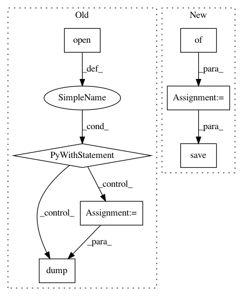

c12f538d2d496f5e8f932abc1ee72a586b9ea855,fonduer/learning/disc_learning.py,TFNoiseAwareModel,save,#TFNoiseAwareModel#Any#Any#Any#Any#,330
Before Change
saver = tf.train.Saver(tf.global_variables())
// Save model kwargs needed to rebuild model
with open(os.path.join(model_dir, "model_kwargs.pkl"), "wb") as f:
dump(self.model_kwargs, f)
// Save graph and report if verbose
saver.save(
self.session, os.path.join(model_dir, model_name), global_step=global_step
)
if verbose:
After Change
if not os.path.exists(model_dir):
os.makedirs(model_dir)
params = {
"model": self.state_dict(),
"cardinality": self.cardinality,
"name": model_name,
"config": self.model_kwargs,
"epoch": global_step,
}
model_file = "{0}.mdl.ckpt.{1}".format(model_name, global_step)
try:
torch.save(params, "{0}/{1}".format(model_dir, model_file))
except BaseException:
self.logger.warning("Saving failed... continuing anyway.")
if verbose:
In pattern: SUPERPATTERN
Frequency: 3
Non-data size: 7
Instances
Project Name: HazyResearch/fonduer
Commit Name: c12f538d2d496f5e8f932abc1ee72a586b9ea855
Time: 2018-08-14
Author: senwu@cs.stanford.edu
File Name: fonduer/learning/disc_learning.py
Class Name: TFNoiseAwareModel
Method Name: save
Project Name: PIQuIL/QuCumber
Commit Name: 4caabb4385de3cfd3c5d6d48f94fbc202d756fd4
Time: 2018-06-13
Author: emerali@users.noreply.github.com
File Name: rbm/rbm.py
Class Name: RBM
Method Name: save
Project Name: PIQuIL/QuCumber
Commit Name: ffcd8e8aaff01e291e48d86fd83ee410f24bfdd3
Time: 2018-06-18
Author: emerali@users.noreply.github.com
File Name: rbm/rbm.py
Class Name: RBM
Method Name: save